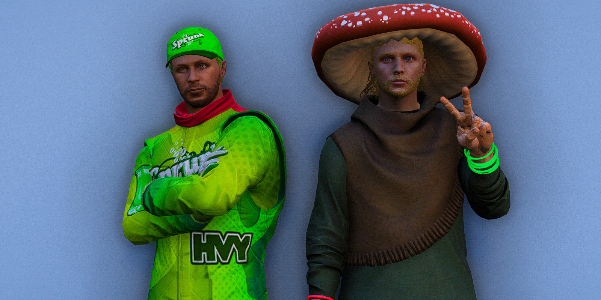
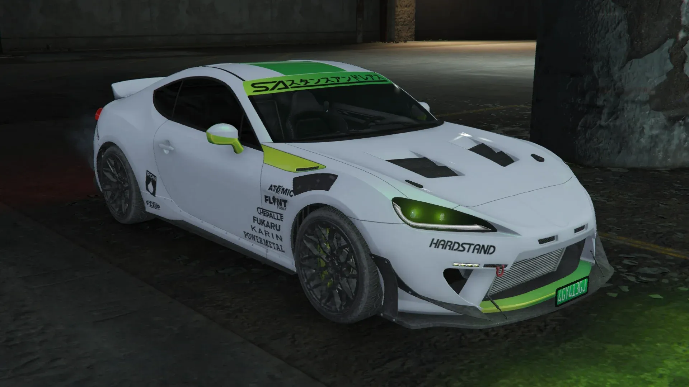

S95 Cup Team
Sprunk Motor Association

Leif and Jeremy have always had an itch to race, but never had an outlet to do so legally. Both have participated in car events from car cruises throughout San Andreas to time trials and drift events at the drift track. Never have they had a legal outlet to really put the pedal to the metal until now. Leif and Jeremy are both excited to be a part of the S95 Cup and have fun doing it.
Sprunk Motor Association was made for two main reasons:
1.
To help promote the Sprunk (TM) Brand within San Andreas.
2.
To support NOS in this monumental undertaking.
Sprunk Motor Association is proud to be a team and make
this championship series the premier racing event in
the state.
